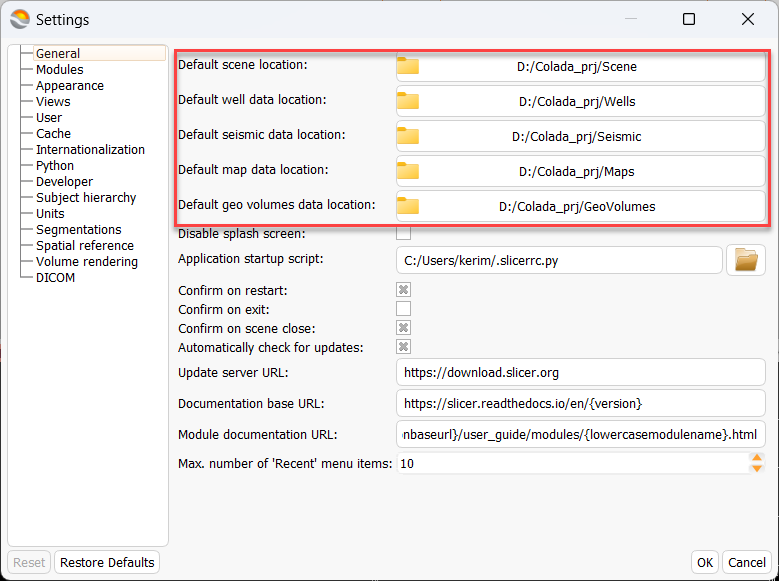
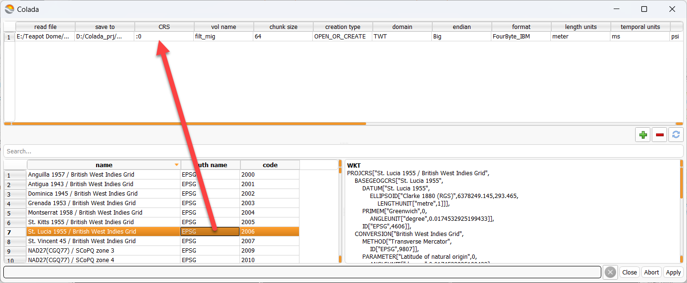
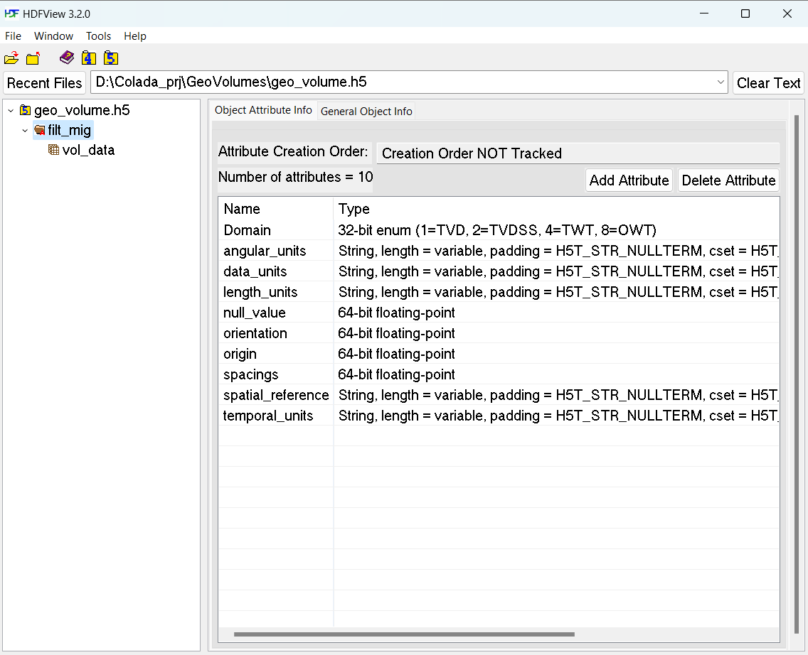
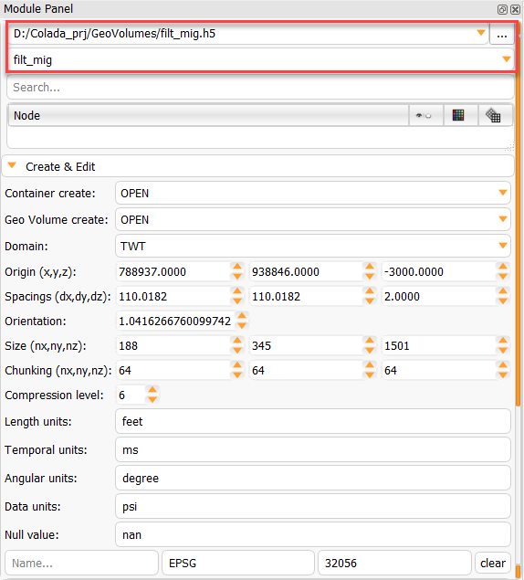
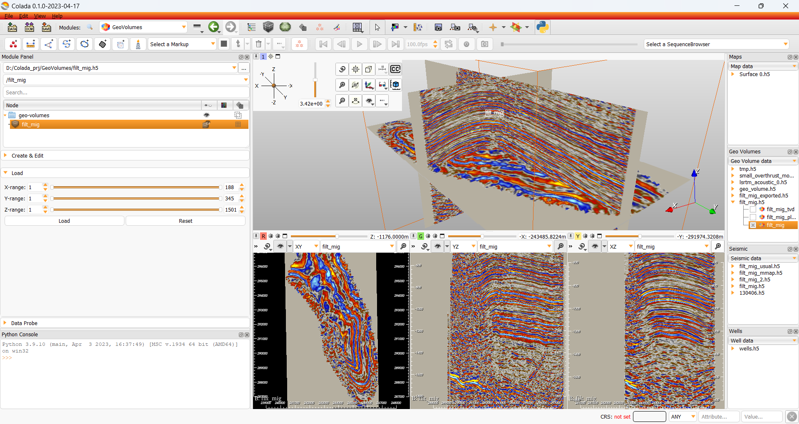

Getting Started¶
This page contains information that you need to get started with Colada, including how to install and use basic features and where to find more information.
System requirements¶
Colada runs on any Windows, Mac, or Linux computer that was released in the last 5 years. Older computers may work (depending mainly on graphics capabilities).
Operating system versions¶
Windows: Windows 10 or 11, with all recommended updates installed. Windows 10 Version 1903 (May 2019 Update) version or later is required for support of international characters (UTF-8) in filenames and text. Microsoft does not support Windows 8.1 and Windows 7 anymore and Colada is not tested on these legacy operating system versions, but may still work.
macOS: macOS High Sierra (10.13) or later (both Intel and ARM based systems). Latest public release is recommended.
Linux: Ubuntu 18.04 or later
CentOS 7 or later. Latest LTS (Long-term-support) version is recommended.
Recommended hardware configuration¶
Memory: more than 4GB (8 or more is recommended). As a general rule, have 10x more memory than the amount of data that you load.
Display: a minimum resolution of 1024 by 768 (1280 by 1024 or better is recommended).
Graphics: Dedicated graphics hardware (discrete GPU) memory is recommended for fast volume rendering. GPU: Graphics must support minimum OpenGL 3.2. Integrated graphics card is sufficient for basic visualization. Discrete graphics card (such as NVidia GPU) is recommended for interactive 3D volume rendering and fast rendering of complex scenes. GPU texture memory (VRAM) should be larger than your largest dataset (e.g., working with 2GB data, get VRAM > 4GB) and check that your images fit in maximum texture dimensions of your GPU hardware. Except rendering, most calculations are performed on CPU, therefore having a faster GPU will generally not impact the overall speed of the application.
Some computations in Colada are multi-threaded and will benefit from multi core, multi CPU configurations.
Interface device: a three button mouse with scroll wheel is recommended. Pen, multi-touchscreen, touchpad, and graphic tablet are supported. All OpenVR-compatible virtual reality headsets are supported for virtual reality display.
Internet connection to access extensions, Python packages, online documentation, sample data sets, and tutorials.
Once downloaded, follow the instructions below to complete installation:
Windows¶
Run the installer.
Current limitation: Installation path must only contain English (ASCII printable) characters because otherwise some Python packages may not load correctly (see this issue for more details).
Run Colada from the Windows start menu.
Use “Apps & features” in Windows settings to remove the application.
Mac¶
Open the install package (.dmg file).
Drag the Colada application (Colada.app) to your Applications folder (or other location of your choice).
This step is necessary because content of a .dmg file is opened as a read-only volume, and you cannot install extensions or Python packages into a read-only volume.
Delete the Colada.app folder to uninstall.
Note: currently Colada packages are not signed. Therefore, when the application is started the first time the following message is displayed: “Colada… can’t be opened because it is from an unidentified developer”. To resolve this error, locate the application in Finder and right-click (two-finger click) and click Open. When it says This app can’t be opened go ahead and hit cancel. Right click again and say Open (yes, you need to repeat the same as you did before - the outcome will be different than the first time). Click the Open (or Open anyway) button to start the application. See more explanation and alternative techniques here.
Linux¶
Open the tar.gz archive and copy directory to the location of your choice.
Installation of additional packages may be necessary depending on the Linux distribution and version, as described in subsections below.
Run the
Coladaexecutable.Remove the directory to uninstall.
Notes:
Colada is expected to work on the vast majority of desktop and server Linux distributions. The system is required to provide at least GLIBC 2.17 and GLIBCCC 3.4.19. For more details, read here.
Getting command-line arguments and process output containing non-ASCII characters requires the system to use a UTF-8 locale. If the system uses a different locale then the
export LANG="C.UTF-8"command may be used before launching the application to switch to an acceptable locale.
Debian / Ubuntu¶
The following may be needed on fresh debian or ubuntu:
sudo apt-get install libpulse-dev libnss3 libglu1-mesa
sudo apt-get install --reinstall libxcb-xinerama0
Warning
Debian 10.12 users may encounter an error when launching Colada:
Warning: Ignoring XDG_SESSION_TYPE=wayland on Gnome. Use QT_QPA_PLATFORM=wayland to run on Wayland anyway.
qt.qpa.plugin: Could not load the Qt platform plugin "xcb" in "" even though it was found.
This application failed to start because no Qt platform plugin could be initialized. Reinstalling the application may fix this problem.
Available platform plugins are: xcb.
The solution is to create symlink:
sudo ln -s /usr/lib/x86_64-linux-gnu/libxcb-util.so /usr/lib/x86_64-linux-gnu/libxcb-util.so.1
Fedora¶
Install the dependencies:
sudo dnf install mesa-libGLU libnsl
The included libcrypto.so.1.1 in the Colada installation is incompatible with the system libraries used by Fedora 35. The fix, until it is updated, is to move/remove the included libcrypto files:
$COLADA_ROOT/lib/Colada-x.xx/libcrypto.*
Using Colada¶
Colada offers lots of features and gives users great flexibility in how to use them. As a result, new users may be overwhelmed with the number of options and have difficulty figuring out how to perform even simple operations. This is normal and many users successfully crossed this difficult stage by investing some time into learning how to use this software.
How to learn Colada?
Quick start¶
The easiest way to start is to open Welcome to Colada module and follow the proposed actions.
Note
When Colada is just installed and run for first time don’t forget to run: colada.init_python_julia_packages(). This will install some packages that is required by some modules (Internet connection is required).
{kind=link}
Setting default directories¶
Many different fileformats supported by VTK may be loaded to Colada as is.
Nevertheless geological data must be stored in HDF5 containers using structures defined by h5geo library. All the necessary information about spatial reference of data, units (length, temporal and angular), domain (TWT, OWT, TVD, TVDSS) reside in HDF5 containers as defined by h5geo. Each type of container (Seismic, Geo-Volumes, Wells, Maps) is stored in separate folders. This makes convenient to load/store data.
{kind=link}
Setting spatial reference¶
The user is able to set spatial reference and units of the current session. All the geological data loaded to Colada will be transformed to spatial reference and units of the session.
To change spatial reference find one in the table and using drag&drop technique place it to input widget like shown in the picture.
Note
It is recommended to work within some spatial reference.
If one doesn’t want to use it then don’t forget to turn on the checkbox Ignore coordinate transformation on failure
in Toolbar menu->Edit->Application Settings->Spatial reference.
Though the units must be set anyway.
{kind=link}
Setting units¶
The most important is to set length and time units.

Read data¶
All readers are structured in similar way: there is a table with data to be read and table with allowed spatial references.
For example SEGY stack reader looks like shown in the picture.
{kind=link}
A number of columns must be fille to read such data. Most of them are well known to seismic specialists. And all other are pretty self-described. To change spatial reference choose one from the table below and put it to the table above at specified row.
To update/remove row select that row and click on appropriate button.
View data¶
After the file is read it can be processed in Colada.
But first it recommended to download and install HDFVIEW application.
This application allows to view content on HDF5 file.
It is good to understand h5geo data structures.
But don’t forget to close the container if it is going to be used by Colada with
file locking set. Conainer becomes incaccessible if it is opened in HDFVIEW
Warning
HDF5 file locking prevents user from data corruption.
It is not recommended to avoid this setting as data may be lost if multiple processes write data to the same object at the same time. If one doesn’t want to use it, open ColadaLauncherSettings.ini and set HDF5_USE_FILE_LOCKING=FALSE.
Here is a picture of how geo-volume look using HDFVIEW:
{kind=link}
As one can see all the insformation is described by object’s attributes.
The object may be viewed in Colada as well.
For that do the following: click on the checkbox in the treeview, current module will be changed to GeoVolumes and there in Create & Edit section one can find and edit information about this object.
{kind=link}
The same effect can be achieved by drag&drop item from treeview and putting it to the input boxes of the module.
{kind=link}
To load the data select the range of XYZ and click Load button.
Then an item will be appeared in the subject-hierarchy section.
Click on eye to display the selected volume.
{kind=link}
This will cause to display volume in the 2D slices. To display it on 3D view click on eye in each slice.
{kind=link}
All the loaded data can be viewed in Data module.
Control how volume is visualized¶
Go to the Volumes module, set current volume and modify whatever you want.